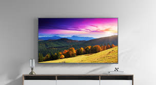
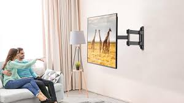
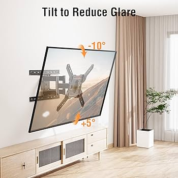

Televisor Pequeño
Televisor Pequeño
Ideal para cocinas, dormitorios o espacios reducidos. Tamaños entre 24” y 32”. Fácil instalación en pared.

Televisor Mediano
Perfecto para salas de estar. Tamaños entre 40” y 55”. Requiere soporte adecuado para mayor peso.

Televisor Grande
Recomendado para salas principales o áreas comunes. Tamaños entre 60” y 75”. Necesita soporte robusto.

Televisor Extra Grande
Perfecto para home theater o salones amplios. Tamaños de 80” a más de 100”. Instalación avanzada y especializada.